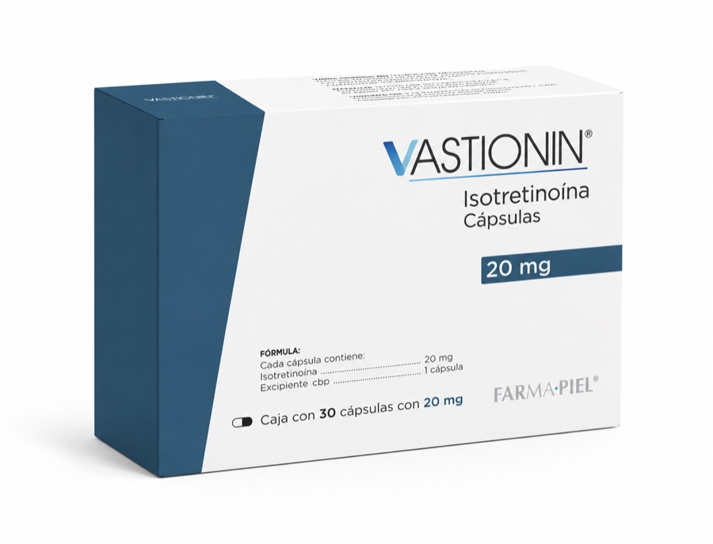

¿Qué es Vastionin?
Vastionin es una marca de isotretinoína en cápsulas dentro de la línea dermatológica de MG Dermalab.
Dermatología
10 mg · 20 mg
Isotretinoína de 10 mg y 20 mg con cotización directa.
Vastionin en concentraciones de 10 mg y 20 mg, con atención comercial directa y disponibilidad sujeta a confirmación.

Vastionin es una marca de isotretinoína en cápsulas dentro de la línea dermatológica de MG Dermalab.
La isotretinoína oral se reserva para formas graves de acné y requiere indicación médica. Esta página ofrece información general y comercial, no consejo médico individual.
La isotretinoína interviene en la actividad sebácea y otros procesos relacionados con el acné. El tratamiento debe individualizarse y vigilarse profesionalmente.
Fuente principal: DailyMed · isotretinoína
Información comercial
Mostramos únicamente las presentaciones confirmadas en nuestro catálogo. La existencia se valida al solicitar cotización.
MG Dermalab
Comparte concentración, número de piezas y destino para preparar tu cotización. Atendemos solicitudes de profesionales de la salud, clínicas y farmacias cuando corresponde.
Información del producto
Datos comerciales ya publicados por MG Dermalab.
Revisamos lote, caducidad y empaque antes del envío y trabajamos con laboratorios reconocidos. Conoce nuestro proceso de revisión.
Coordinamos cobertura, costo y tiempo antes de procesar el pedido. Consulta cómo coordinamos los envíos.
Antes de cotizar
Se consultan presentaciones de 10 mg y 20 mg.
La existencia se confirma al recibir presentación, cantidad y destino.
Sí, con cobertura y condiciones confirmadas en la cotización.
Indica 10 mg o 20 mg, cantidad y ciudad por WhatsApp o mediante el formulario.
Atención directa
Comparte la presentación, cantidad y ciudad. Nuestro equipo revisará tu solicitud y confirmará las opciones disponibles.